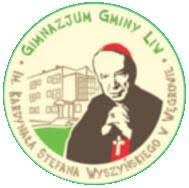

Przestawię tu szkoły, do których uczęszczałam, a są to:
- Samorządowa Szkoła Podstawowa im.Bohaterów Września 1939 w Starejwsi
- Gimnazjum Gminy Liw im. Kardynała Stefana Wyszyńskiego
- I Liceum Ogólnokształcące im. Adama Mickiewicza w Węgrowie
Samorządowa Szkoła Podstawowa im.Bohaterów Września 1939 w Starejwsi
Do szkoły podstawowej uczęszczałam w latach 2008-2014.Szkoła ta powstała w 1970 roku na polecenie władz rosyjskich i początkowo liczyła trzy klasy, łącznie 35 dzieci.
W grudniu 1918r. po zakończeniu I wojny światowej, szkoła w Starejwsi nadal liczyła trzy oddziały, mające swoją siedzibę w domu ludowym przy kościele. Następnie została przeniesiona do drewnianego budynku na miejscu obecnej szkoły.
Od 1944r. do 1962r. szkoła mieściła się w pałacu Radziwiłłów, ponieważ szkoła została spalona.
1 września 1962r. uczniowie rozpoczęli naukę w nowym budynku, który służy do dziś.
W 1972r. została dobudowana do niego sala gimnastyczna.
W roku 1999r. w wyniku reform ośmioklasowa szkoła została przekształcona w sześcioklasową szkołę podstawową, a w 2017 roku została z powrotem przekształcona w szkołę ośmioklasową.


Gimnazjum Gminy Liw im. Kardynała Stefana Wyszyńskiego
Do gimnazjum uczęszczałam w latach 2014-2017. Niestety nie mam wiele informacji o szkole, ponieważ w roku 2018 została zlikwidowana przez zmianę systemu nauczania na szkołę podstawową ośmioklasową.
I Liceum Ogólnokształcące im. Adama Mickiewicza w Węgrowie
Do liceum uczęszczałam w latach 2017-2020. Szkoła ta powstała w 1918 roku i jest do dnia dzisiejszego. W latach 1929–1933 świadectwo dojrzałości uzyskało 70 osób, a w latach 1926–1939 już 188 abiturientów otrzymało to świadectwo. Szkoła mieści się w dwóch budynkach: w głównym budynku i w pawilonie.